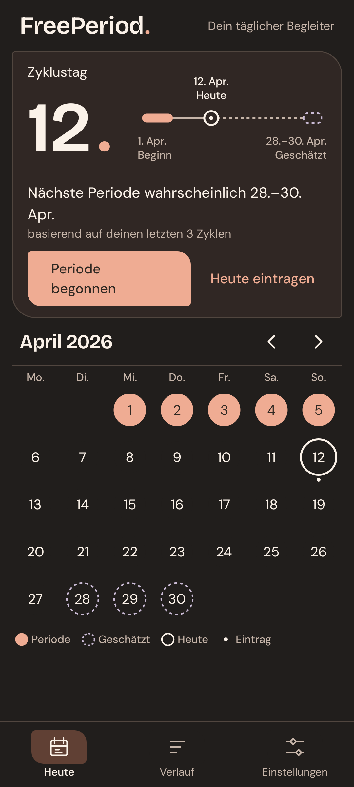
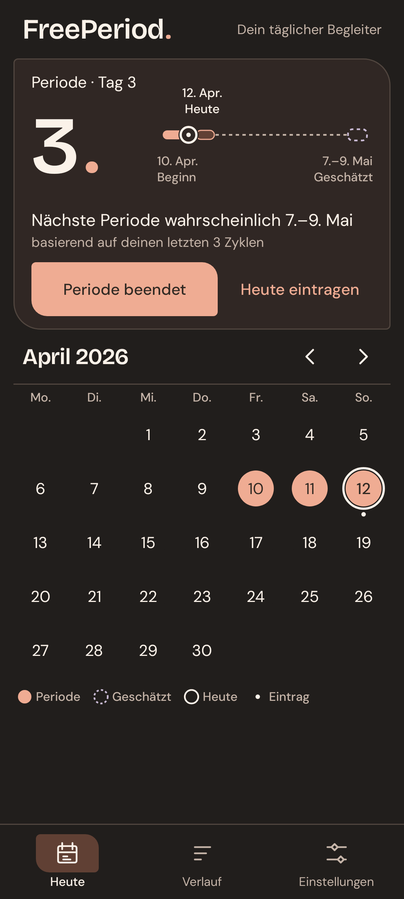
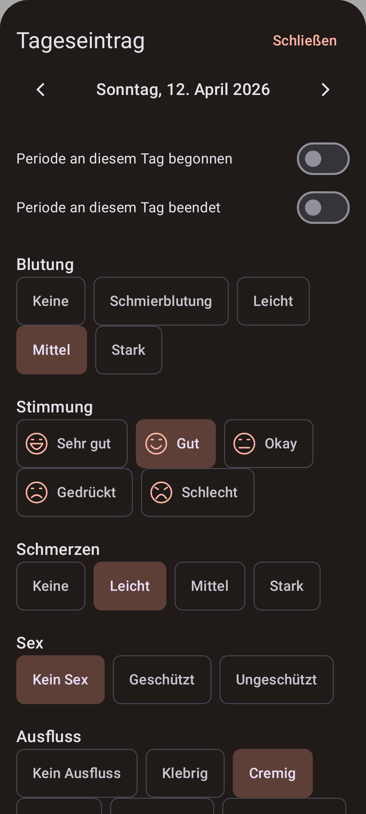
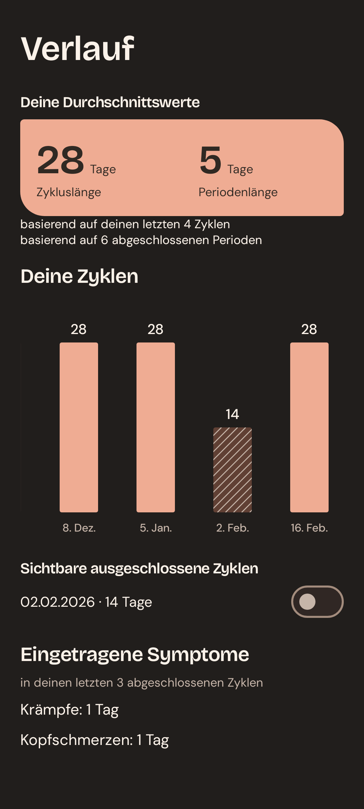
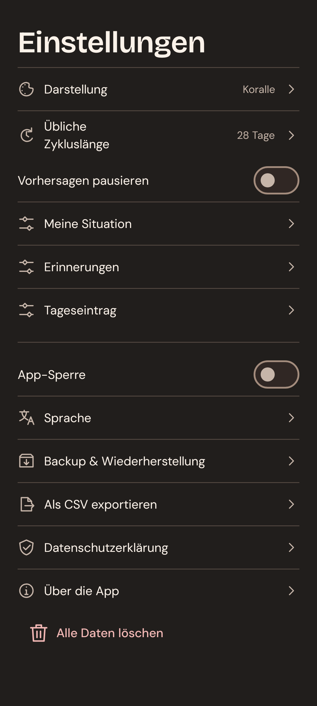
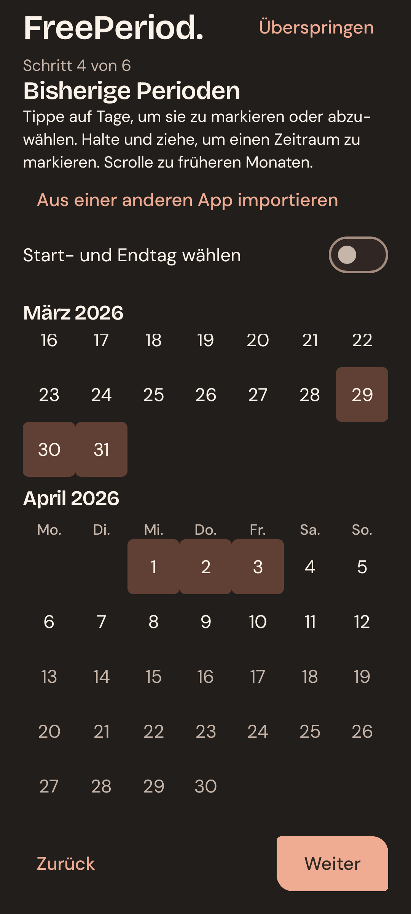

FreePeriod.
Dein Zyklus.
Auf einen Blick.
Einträge und Kalenderschätzungen.

Einträge und Kalenderschätzungen.

Beginn und Ende mit wenigen Tipps eintragen.

Stimmung, Beschwerden und Notizen. So viel du möchtest.

Frühere Zyklen und Einträge im Blick.

Farben, Erinnerungen und optionale App-Sperre.

Vergangene Perioden eintragen oder überspringen.
